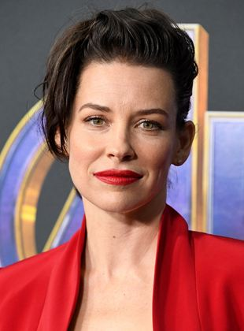
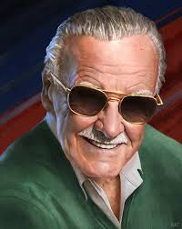
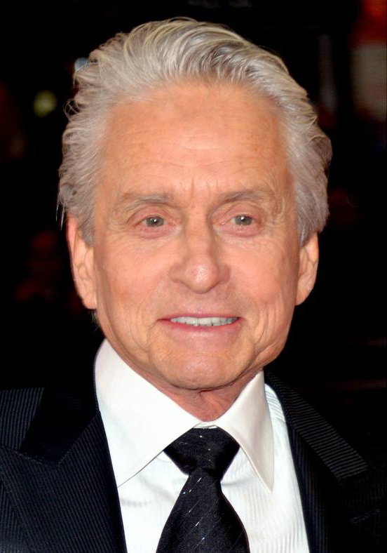
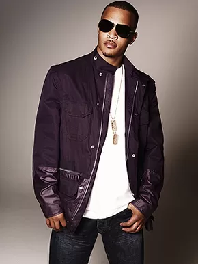
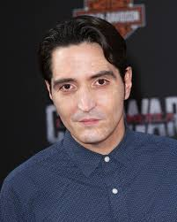
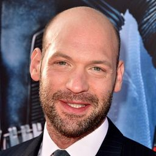
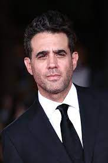
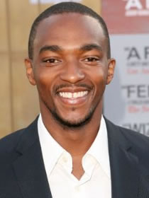

É um ator, comediante, escritor e produtor norte-americano. É conhecido pela sua participação em filmes de comédia como The Anchorman, The 40-Year-Old Virgin, Knocked Up, Role Models, I Love You, Man, Our Idiot Brother, Wanderlust, As Patricinhas de Beverly Hills, This is 40, Lar Ideal e admission. Em 2015 passou a fazer parte do universo cinematográfico da Marvel com o papel do super-herói Homem-Formiga.Paul Rudd nasceu em 6 de abril de 1969 em Passaic, Nova Jérsia, filho de Michael, um guia turístico e vice-presidente da Trans World Airlines, e de Gloria, uma gestora de vendas da estação televisiva KCMO-TV em Kansas City, no Missouri.
Nacionalidade:Norte-americano
Idade: 53 Anos
Prêmios: Critics' Choice Television Award de Melhor Ator Convidado em Série de Comédia
Evangeline Lilly

Evangeline Lilly
É uma atriz, modelo e escritora canadense. É conhecida por seus papéis como Kate Austen na aclamada série de televisão Lost, como a elfa Tauriel em O Hobbit: A desolação de Smaug, O Hobbit: A Batalha dos Cinco Exércitos, e como Hope Van Dyne, a Vespa em Homem-Formiga, Homem-Formiga e a Vespa e em Vingadores: Ultimato.Lilly nasceu em Fort Saskatchewan, Alberta, Canadá, em uma família cristã evangélica. Seu pai é professor de economia doméstica e sua mãe consultora. Lilly tem duas irmãs. Sua irmã caçula, Andrea, foi descrita por Evangeline como "a atriz da família". Durante a infância, a família não dispunha de um aparelho de televisão em casa.
Nacionalidade: Canadiana
Idade:42 anos
Prêmio: Prémio Screen Actors Guild para melhor elenco em série de drama
2006
Stan Lee

Stan Lee
Stanley Martin Lieber, mais conhecido como Stan Lee , foi um escritor, editor, publicitário, produtor, diretor, empresário e ator norte-americano. Foi editor-chefe e presidente da Marvel Comics antes de deixar a empresa para se tornar presidente emérito da editora, bem como um membro do conselho editorial. Lee também era conhecido por fazer várias aparições em filmes do Universo Cinematográfico Marvel.
Em colaboração com vários artistas, incluindo Jack Kirby e Steve Ditko, Stan Lee cocriou diversos super-heróis, como: Homem-Aranha, Homem de Ferro, Hulk, Doutor Estranho, Quarteto Fantástico, Demolidor, Pantera Negra, X-Men e os Vingadores. Além disso, desafiou a organização de censura da indústria de quadrinhos americana, o Comics Code Authority, indiretamente levando-a a atualizar suas políticas. Lee liderou a expansão da Marvel Comics de uma pequena divisão editorial para uma gigantesca corporação de multimídia.
Nacionalidade:Norte-americano
Idade: 28 de dezembro de 1922(Nova Iorque, Estados Unidos)Morte 12 de novembro de 2018 (95 anos)Los Angeles, Califórnia, Estados Unidos
Prêmio: Comics Hall of Fame
Medalha Nacional de Artes (2008)
Michael Douglas

Michael Douglas
Michael Douglas graduou-se em 1968 na Choate School University de Santa Barbara, em American Place Theatre. Ficou conhecido do público ao estrelar para a televisão o seriado "The Streets of San Francisco" (ao lado do veterano ator Karl Malden). Mas ganharia renome nos meios cinematográficos quando produziu "One Flew Over the Cuckoo's Nest". Esse filme era um projeto pessoal de seu pai, Kirk Douglas, que havia adquirido os direitos nos anos 60. Quando assumiu a produção, Michael teve que convencer seu pai a deixar o papel para Jack Nicholson, que considerava ser o ator mais indicado. Michael produziu e atuou em "Síndrome da China" com Jane Fonda e Jack Lemmon. Considerado no lançamento um filme sem interesse, espantou a todos quando treze dias depois ocorreu o acidente na usina nuclear de "Three Mile Island".
Nos anos 80, Douglas trabalharia sem cessar, em sucessos como Romancing the Stone e Wall Street o que lhe afetaria e o levaria a passar por uma crise por consumo de drogas e álcool. Ao ser internado em uma clínica para recuperação, Michael ficou irritado quando um tablóide publicou que ele queria se tratar de seu "vício em sexo". Douglas estrelaria ainda "Um Dia de Fúria" e filmes sobre mulheres dominadoras como Fatal Attraction com Glenn Close, Disclosure com Demi Moore e The War of the Roses com Kathleen Turner.
Nacionalidade: Norte-americano
Idade:77 anos
Prêmio:Oscares da AcademiaMelhor Filme1975 - One Flew Over the Cuckoo's Nest, Melhor Ator1987 - Wall StreetEmmysMelhor Ator em Minissérie ou Telefilme2013 - Behind the CandelabraGlobos de OuroMelhor Ator em Cinema - Drama1987 - Wall Street, Melhor Ator em Série - Comédia ou Musical2019 – The Kominsky Method, Melhor Ator em Minissérie ou Filme2013 - Behind the CandelabraPrémio Cecil B. DeMille2004 - Prêmio Honorári,Prémios Screen Actors Guild, Melhor Elenco2000 - TrafficMelhor Ator em Minissérie ou Telefilme2013 - Behind the Candelabra, César:César Honorário1998 - Prémio Honorário2016 - Prémio Honorário, Prémios BAFTA: Melhor Filme1975 - One Flew Over the Cuckoo's NestPrémios National Board of ReviewMelhor Ator1987 - Wall StreetPrémios Critics' ChoiceMelhor Ator em Minissérie ou Telefilme2013 - Behind the Candelabra
Michael Peña
Michael Peña
Peña nasceu em Chicago, Illinois, onde seu pai trabalhava em uma fábrica de botões e sua mãe era uma assistente social. Os pais de Peña, imigrantes provenientes do México, foram originalmente agricultores. Peña frequentou a Hubbard High School em Chicago. Peña e sua esposa, Brie Shaffer, tiveram seu primeiro filho em setembro de 2008, um menino chamado Roman.Embora Peña tem sido presença constante em produções independentes desde 1994, sua descoberta veio em 2004, em dois filmes premiados com o Oscar de melhor filme, Million Dollar Baby e Crash, ambos escritos por Paul Haggis. Este último também foi dirigido por Haggis, enquanto o primeiro foi dirigido por Clint Eastwood. Embora ambos os filmes sejam aclamados pela crítica, Peña recebeu atenção por seu desempenho particularmente emocional em Crash. No ano seguinte, fez uma participação na série vencedora do Globo de Ouro, The Shield. Em 2006, estrelou o filme de Oliver Stone, baseado nos Ataques de 11 de setembro de 2001, World Trade Center. Ele também teve um pequeno papel no premiado filme de Alejandro González Iñárritu Babel, indicado ao Oscar e vencedor do Globo de Ouro. Isto dá-lhe a rara distinção de ter aparecido em três filmes indicados ao Oscar consecutivos. Ele também estrelou ao lado de Mark Wahlberg em Shooter (2007) como o novato agente do FBI Nick Memphis.Em 2006, Peña atuou no filme da HBO Walkout fazendo o papel de Sal Castro, um professor de ensino médio mexicano-americano que inspira um grupo de estudantes do ensino médio de East Los Angeles para lutar pelos direitos dos mexicanos.Em 2009, Peña interpretou um segurança ao lado do personagem de Seth Rogen em Observe and Report.Em 2012, ele co-estrelou com Jake Gyllenhaal como um oficial da polícia de Los Angeles, em End of Watch de David Ayer. No mesmo ano, ele começou a filmar Chávez, um filme biográfico sobre a vida do líder norte-americano Cesar Chavez, que fundou a United Farm Workers. Peña estrela como Chávez.
Nacionalidade: Norte-americano
Idade: 46 anos
Prémios Screen Actors Guild:Melhor Elenco em Cinema2013 – American Hustle
Clifford Joseph

Clifford Joseph
Clifford Joseph Harris Jr nasceu em 25 de setembro de 1980, e foi criado pelo seus avós devido ao seu pai ter Alzheimer, morar em Nova York e morrer devido à doença. Ainda jovem abandonou a escola e se tornou traficante de drogas e aos 14 anos já havia sido preso algumas vezes. Um produtor executivo o descobriu e o levou para assinar com a Arista Records.T.I. lançou seu álbum de estréia, I'm Serious, em outubro de 2001 pela Arista Records. O álbum contém um single de mesmo nome, porém não obteve sucesso. Apesar das parcerias do álbum com convidados e a equipe de produção, o álbum chegou ao número 98 na Billboard, só vendeu 163.000 cópias nos Estados Unidos e foi mal recebido pela critica.Devido a baixa recepção comercial o álbum foi retirado da Arista Records fazendo com que em 2001, T.I. criasse a Grand Hustle, onde lançou algumas mixtapes e também fez um acordo com a Atlantic Records. T.I. lançou seu segundo álbum Trap Muzik em 19 de agosto de 2003 pela Grand Hustle, que estreou no número 4 na Billboard e vendeu 109 mil cópias em sua primeira semana.Em março de 2004, um mandado foi emitido para a prisão de T.I. depois que ele violou sua liberdade condicional de uma condenação por trafico de drogas em 1997. T.I foi condenado a três anos de prisão. Um mês depois ele trocou sua pena, pela prestação de serviços comunitários e continuou em liberdade condicional. Depois de ser lançado em liberdade condicional, ele recebeu acusações em diversas cidades ao redor de Georgia por delitos que variam de posse de arma de fogo até posse de maconha.
Nacionalidade: Norte-americano
Idade: 41 anos
David Dasmalchian

David Dastmalchian
É um ator americano de cinema e teatro. Ele teve papéis coadjuvantes em várias franquias de super -heróis ; ele interpretou Thomas Schiff em O Cavaleiro das Trevas , Kurt em ambos os filmes do Homem-Formiga da Marvel Studios , Abra Kadabra no The Flash da CW , e Abner Krill / Polka-Dot Man emO Esquadrão Suicida (2021). Ele também apareceu em três dosfilmes de Denis Villeneuve , incluindo Prisoners , Blade Runner 2049 e Dune .Dastmalchian escreveu e estrelou o filme independente semi-autobiográfico Animals , que foi aclamado no SXSW Film Festival de 2014.Dastmalchian começou sua carreira profissional em meados dos anos 2000 em Chicago, trabalhando no palco e em comerciais. Ele foi aclamado por papéis principais em The Glass Menagerie , de Tennessee Williams , e Buried Child , de Sam Shepard , no Shattered Globe Theatre de Chicago. Ele esteve envolvido com várias companhias de teatro de Chicago e foi um associado artístico no Caffeine Theatre. Sua estréia no cinema veio no final dos anos 2000, como o capanga enlouquecido do Coringa , Thomas Schiff, em O Cavaleiro das Trevas, de Christopher Nolan . Sua interpretação de Bob Taylor em Prisioneiros de Denis Villeneuve recebeu críticas fortes. Richard Corliss, da Time , chamou o desempenho de Dastmalchian de "excelente - tagarela, modesto com alguma psicopatia reveladora sutil" e Paul MacInnes , do The Guardian , comparou sua introdução como um novo suspeito à entrada de Kevin Spacey em Seven . Em março de 2014, Dastmalchian foi premiado com o Prêmio Especial do Júri por Coragem em Storytelling no South by Southwest Film Festival. Escreveu e estrelou o longa-metragem Animals , dirigido por Collin Schiffli. Ashley Moreno, do The Austin Chronicle , credita ao roteiro de Dastmalchian "apresentar uma autenticidade que muitas vezes falta em filmes sobre abuso de drogas". Brian Tallerico, da Film Threat , também canta elogios ao desempenho de destaque de Dastmalchian, observando sua capacidade de "capturar esse sentimento de auto-aversão que aparece na linguagem corporal de um viciado sem exagerar". Outras aparições em filmes incluem papéis principais no thriller psicológico The Employer , o sucesso indie grindhouse Sushi Girl , o drama Cass (vencedor, San Diego Black Film Festival ), Girls Will Be Girls 2012 (uma sequência do sucesso cult de 2003 ). Girls Will Be Girls ), Saving Lincoln , Virgin Alexander , Ant-Man e Michel Franco's Chronic .Ele também apareceu na televisão: como Simon na série de ficção científica da Fox , Almost Human , no episódio "Simon Says"; como especialista em xadrez e suspeito de assassinato na série de drama processual forense da CBS CSI: Crime Scene Investigation ; e como Oz Turner na série dramática da BBC Intruders . Outras aparições na televisão incluem o seriado da FX The League , a série de drama criminal da Showtime , Ray Donovan , e o drama médico ER , da NBC .Dastmalchian interpretou o vilão da DC Comics Abra Kadabra nas temporadas 3 e 7 de The Flash . Em 2017, ele se reuniu com Denis Villeneuve quando apareceu em Blade Runner 2049 . No ano seguinte, ele reprisou o papel de Kurt na sequência de Homem -Formiga, Homem-Formiga e a Vespa . Em 2021 ele apareceu como Polka-Dot Man em The Suicide Squad , um personagem com quem ele disse que se conectou em um nível pessoal devido ao bullying na infância que sofreu como resultado de seu vitiligo. Mais tarde, no mesmo ano, ele apareceu em seu terceiro filme de Denis Villeneuve, quando interpretou Piter De Vries em Duna.
Nacionalidade: Norte-americano
Idade: 46 anos
Judith Therese
Judith Therese
Judith Therese Evans , conhecida como Judy Greer, é uma atriz e dubladora norte-americana que atua no cinema e na televisão. Um dos trabalhos mais notáveis de Judy no cinema foi a participação no filme De Repente 30 . Fez o papel de Karen, mãe das crianças, no filme Jurassic World. Na televisão, fez várias participações em seriados de grande audiência como Arrested Development, no papel da Dra. Elisabeth Plimpton, em The Big Bang Theory, e em Two and a Half Men, como a ex-esposa de Walden Schmidt, Bridget.
Nacionalidade: Norte-americano
Idade: 46 anos
Stoll

Corey Stoll
Stoll nasceu no distrito Upper West Side de Nova York, em uma família judia.Ele se formou em 1998 no Oberlin College, e depois na Tisch School of Arts da Universidade de Nova Iorque em 2003.Seu primeiro papel na televisão foi em 2004 em um episódio de CSI: Crime Scene Investigation. No mesmo ano, ele apareceu em episódios de Charmed e NYPD Blue. No ano seguinte, estreou no cinema com o filme North Country.Nos anos seguintes ele apareceria em séries como Alias, Numb3rs, CSI: Miami, ER, Law & Order, NCIS, The Good Wife e teria um papel principal em Law & Order: Los Angeles. No cinema ele apareceu em filmes como The Number 23, Salt, The Bourne Legacy, e Midnight in Paris como Ernest Hemingway.Em 2013, ele passou a ter um papel principal na série House of Cards, da Netflix, interpretando o Deputado Peter Russo.Em 2014, estrelou a série The Strain, baseada na chamada Trilogia da Escuridão de Guillermo del Toro e Chuck Hogan, como Dr. Ephraim "Eph" Goodweather.Em 2015, interpretou o vilão Darren Cross/Jaqueta Amarela no filme Ant-Man, da Marvel Studios.
Nacionalidade: Norte-americano
Idade: 46 anos
Bobby Cannavale

Bobby Cannavale
Cannavale nasceu em Nova Jérsei, filho de pai ítalo-americano e mãe cubano-americana. Iniciou sua carreira no teatro, sem ter oficialmente estudado atuação em nenhuma instituição. Ganhou destaque no início de carreira nos filmes Night Falls on Manhattan (1997) e O Colecionador de Ossos (1999), quando interpretou o namorado de Angelina Jolie. Também em 1999, ganhou seu papel de maior destaque na série dramática Third Watch, com o seu homônimo Bobby Caffey. Não se sabe se o nome do personagem já estava definido antes da escolha de Cannavale para interpretá-lo. Em 2001, após deixar Third Watch declarando que não conseguia desenvolver seu personagem da forma que gostaria, estrelou ao lado de Alan Arkin no programa 100 Centre Street na TV americana. Programa que foi escrito e dirigido por Sidney Lumet, seu sogro.Em 2002 participou como convidado da série Ally McBeal, pouco antes dessa ser cancelada. Pouco tempo depois, estrelou ao lado de Yancey Arias e Sheryl Lee a mini-série Kingpin. Em 2003, fez o papel de um drogado homossexual na série Oz. De 2004 a 2006 fez o personagem Vince D´Angelo na série de comédia Will & Grace. Pela sua atuação na série, ganhou o Emmy de "Melhor Ator Convidado em uma Série de Comédia".Depois fez aparições em vários filmes, como Snakes on a Plane, The Guru (como um bombeiro gay) (2002), Shall We Dance? (como um homossexual reprimido) (2004) e Romance & Cigarettes (2005), além de outros papéis em séries como Sex and the City, A Sete Palmos, Oz, Law & Order, Law & Order: Criminal Intent e Law & Order: Special Victims Unit.
Nacionalidade: Norte-americano
Idade: 52 anos
Abby Ryder
Abby Ryder
Abby estreou na televisão em 2013, aos cinco anos de idade, participando de um episódio da segunda temporada de The Mindy Project.Em 2014, teve um papel recorrente na primeira temporada de Transparent. Ela também estreou no cinema com um pequeno papel em Playing It Cool.Em 2015, teve papéis recorrentes nas séries Togetherness e The Whispers. No mesmo ano participou do filme Homem Formiga como Cassie Lang. E fez participação no filme Para Sempre Minha Garota.
Nacionalidade: Norte-americano
Idade: 14 anos
Anthony Mackie

Anthony Mackie
Anthony Mackie é um ator norte-americano, seus filmes de destaque são A Cor de Um Crime com Julianne Moore, 8 Mile como Papa Doc, Capitão América - O Soldado Invernal como Sam Wilson/Falcão, Notorious, filme que ele interpreta o rapper Tupac Shakur, Menina de Ouro e Guerra ao Terror.Mackie nasceu em Nova Orleans, Louisiana, filho de Martha (nascida Gordon) e Willie Mackie Sr., um carpinteiro que possuía uma empresa de telhados, Mackie Roofing. Seu irmão, Calvin Mackie, é um ex-professor associado de engenharia na Universidade Tulane que agora trabalha na Autoridade de Recuperação de Louisiana. Mackie estudou na Warren Easton Sr High School e no New Orleans Center for Creative Arts (NOCCA) e formou-se no programa de teatro do ensino médio na North Carolina School of the Arts (NCSA) em 1997. Mais tarde, ele se formou na Divisão de Drama da Juilliard School como membro do Grupo 30 (1997–2001), que também incluía os atores Tracie Thoms e Lee Pace.Em 2014, Mackie se casou com sua namorada de longa data e namorada de infância, Sheletta Chapital. Eles se divorciaram em 2018. O casal tem quatro filhos juntos.Mackie abriu um bar chamado NoBar em Bed-Stuy, Brooklyn, no verão de 2011. Ele tinha planos de abrir um segundo NoBar em Williamsburg, Brooklyn em 2013, mas fechou todos os NoBar em 2015.
Nacionalidade: Norte-americano
Idade: 43 anos
John Slattery
John Salattery
John Slattery nasceu e foi criado em Boston, Massachusetts, filho de Joan (Mulhern), um CPA, e John "Jack" Slattery, um comerciante de couro, ambos de ascendência irlandesa. John conseguiu seu primeiro show de TV na série de 1988 The Dirty Dozen (1988) e tem trabalhado de forma constante desde então. Sua carreira na televisão incluiu as séries de curta duração Under Cover (1991), Homefront (1991), Maggie (1998) e Feds (1997); e a minissérie Uma Mulher Independente (1995) com Sally Field e Da Terra à Lua (1998), na qual interpretou Walter Mondale. Por ter papéis recorrentes em Will e Grace (1998) como o irmão mais velho de Will, "Sam"; A Juíza (1999) como ex-marido de Amy; e Sex and the City (1998) como um político muito excêntrico, John se tornou um dos atores mais requisitados. Em 2001, ele teve um papel no drama de comédia da NBC Ed (2000), onde interpretou o diretor de ensino médio confiante, legal e distante "Dennis Martino". Esse papel lhe rendeu muita notoriedade e o tornou objeto de debate entre os fãs de Ed (2000). John também teve uma carreira longa, bem sucedida e diversificada no teatro. Estreou-se no teatro na peça de 1989 "A Traviata de Lisboa", também protagonizada por Nathan Lane. Ele teve várias colaborações de sucesso com o dramaturgo Richard Greenberg e apareceu em "The Extra Man", "Night and Her Stars" e "Three Days of Rain", do autor, pelo qual ganhou elogios da crítica por seus papéis duplos de pai e filho. . Em 1993, John fez sua estréia na Broadway contracenando com Nathan Lane em "Laughter on the 23rd Floor", de Neil Simon. Retornando ao teatro em 2000, John estrelou um revival de "Betrayal", de Harold Pinter. Estreando no cinema em 1996, John teve um pequeno papel no filme Prefeitura: Conspiração no Alto Escalão (1996). Ele então apareceu nos filmes Queima de Arquivo (1996), Cadê Marlowe? (1998), Traffic: Ninguém Sai Limpo (2000), e o veículo de Anthony Hopkins/Chris Rock Bad Company (2002)_, antes de encontrar maior fama como uma das estrelas da série Mad Men: Inventando Verdades (2007).